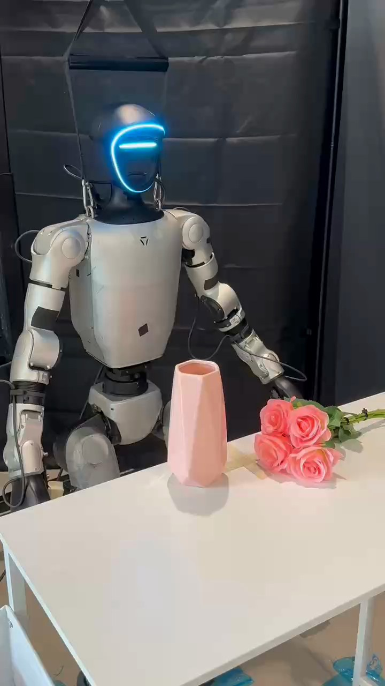

Humanoid Everyday · high-precision-5__insert_flower_into_vase
Insert flower into vase

Visual review action_review.json
{
"prompt_protocol": "humanoid_action_v1",
"prompt_provenance": "visually_authored_from_video_and_initial_frame",
"reviewed_contact_sheets": [
"sheet_001.jpg",
"sheet_002.jpg",
"sheet_003.jpg",
"sheet_004.jpg",
"sheet_005.jpg",
"sheet_006.jpg",
"sheet_007.jpg",
"sheet_008.jpg",
"sheet_009.jpg",
"sheet_010.jpg",
"sheet_011.jpg",
"sheet_012.jpg",
"sheet_013.jpg",
"sheet_014.jpg",
"sheet_015.jpg",
"sheet_016.jpg",
"sheet_017.jpg",
"sheet_018.jpg",
"sheet_019.jpg",
"sheet_020.jpg"
],
"inspected_frame_stride": 2,
"inspected_sampled_frame_count": 1234,
"inspection_coverage": {
"complete_source_frame_interval": [
0,
2466
],
"sampled_frames": "Every second decoded source frame, 0 through 2466 inclusive, viewed across all 20 sheets.",
"native_initial_png_viewed": true,
"native_resolution": [
720,
1280
],
"boundary_precision": "Chronology intervals describe observed phases; exact contact transitions are limited to stride-2 inspection and selected native frames."
},
"observed_sequence": [
{
"source_frame_start": 0,
"source_frame_end_inclusive": 86,
"observation": "The robot stands facing the table; the empty left hand rests near the bouquet, and the right arm hangs down.",
"confidence": "high"
},
{
"source_frame_start": 87,
"source_frame_end_inclusive": 702,
"observation": "The left arm extends outward and raises the empty hand; the wrist changes orientation in preparation for reaching the stems. The bouquet remains lying on the table.",
"confidence": "high"
},
{
"source_frame_start": 703,
"source_frame_end_inclusive": 934,
"observation": "The left hand descends toward the bouquet stem and leaf cluster beside the vase.",
"confidence": "high"
},
{
"source_frame_start": 935,
"source_frame_end_inclusive": 1150,
"observation": "The left fingers close around the green stems below the flower heads while the flowers initially remain near the tabletop; small grip adjustments occur.",
"confidence": "high"
},
{
"source_frame_start": 1151,
"source_frame_end_inclusive": 1534,
"observation": "The closed left hand lifts the bouquet clear of the table, raising the blossoms and rotating the stems from a roughly horizontal position toward downward.",
"confidence": "high"
},
{
"source_frame_start": 1535,
"source_frame_end_inclusive": 1662,
"observation": "The left hand continues orienting the bouquet upright, holding the gathered stems with their free ends below the hand.",
"confidence": "high"
},
{
"source_frame_start": 1663,
"source_frame_end_inclusive": 1828,
"observation": "The left arm carries the upright bouquet inward over the pink vase and aligns the downward stem ends above its opening.",
"confidence": "high"
},
{
"source_frame_start": 1829,
"source_frame_end_inclusive": 2016,
"observation": "The left hand lowers the stem ends through the vase opening; increasing lengths of the stems disappear inside the vase.",
"confidence": "high"
},
{
"source_frame_start": 2017,
"source_frame_end_inclusive": 2180,
"observation": "The hand lowers the bouquet farther into the vase and tilts it to one side, keeping its grasp close to the mouth.",
"confidence": "high"
},
{
"source_frame_start": 2181,
"source_frame_end_inclusive": 2240,
"observation": "The left fingers open and separate from the stem bundle; the bouquet remains resting in the vase.",
"confidence": "high"
},
{
"source_frame_start": 2241,
"source_frame_end_inclusive": 2466,
"observation": "The left hand withdraws sideways and lowers beside the body. The vase remains upright, with the pink rose bouquet supported inside and leaning to one side; no second manipulation follows.",
"confidence": "high"
}
],
"arm_hand_roles": {
"left": "Active manipulator: closes articulated fingers on the gathered flower stems, lifts and turns the bouquet upright, carries it over the vase, lowers the stems inside, opens and withdraws.",
"right": "Hangs beside the torso and does not contact the bouquet or vase.",
"coordination": "Single-hand manipulation; no hand-to-hand transfer or supporting-hand contact. The vase stands on the tabletop throughout."
},
"anatomical_side_evidence": {
"confidence": "high",
"evidence": "Native initial PNG shows the robot front, including face, chest and pelvis. The active arm on image right is continuously attached to the shoulder on the robot left; the inactive arm on image left attaches to the robot right shoulder. The left arm remains traceable from shoulder through elbow and wrist as it reaches and inserts the bouquet.",
"image_to_robot_mapping": {
"image_right": "robot-relative left",
"image_left": "robot-relative right"
},
"uncertainty": null
},
"initial_scene": "An upright pink faceted vase stands on the table in front of the frontal humanoid. A bouquet of several pink rose-shaped blossoms with bundled green stems lies beside the vase, on the robot left side; the stem ends extend outward. Both arms are initially lowered.",
"evidence_frame_indices": [
0,
950,
1120,
1220,
1530,
1718,
1834,
1954,
2096,
2186,
2250,
2466
],
"initial_frame_grounding": "Both the empty pink vase opening and the rose bouquet with its green stems are identifiable in the source initial PNG.",
"outcome": "The bouquet is inserted and visibly released into the vase; the hand clears the bouquet and the flowers remain supported in the upright vase through the final frame.",
"final_release_evidence": "At native frame 2186 the left fingers have opened around the stem cluster; by 2250 the hand is visibly clear to the side while the bouquet remains in the vase, and at 2466 the arm has lowered without removing the bouquet.",
"terminal_state": "Pink rose bouquet remains in the upright pink vase, leaning to one side, with the robot left hand withdrawn and lowered and the right hand inactive. Vase is upright and no flowers are on the tabletop.",
"selected_execution_status": "success",
"uncertainties": [
"The vase hides the inserted stem ends, so insertion depth and internal bottom contact are not visible.",
"Flower material and the source annotation claims of delicate handling or careful force control cannot be established visually."
],
"annotation_discrepancies": [
"The source instruction refers to a single flower; the visible manipulated object is a bouquet of several pink rose-shaped flowers. The source task is otherwise consistent with the observed insertion and release."
],
"video_id": "high-precision-5",
"dataset": "Humanoid_Everyday",
"dedicated_review_agent": "review_he_high_precision_5",
"review_source_video": "Humanoid_Everyday/high-precision-5__insert_flower_into_vase/third_person/original/original.mp4",
"source_frame_count": 2467,
"source_fps": 29.97569866342649,
"native_detail_frames": [
950,
1120,
1220,
1530,
1718,
1834,
1954,
2096,
2186,
2250,
2466
],
"world_model_prompt": "The humanoid uses its left hand to grasp the green stems of the pink rose bouquet lying beside the vase and lifts it from the table. It turns the bouquet upright, moves the stem ends over the pink vase opening, and lowers them into the vase. It opens its hand and withdraws, leaving the bouquet supported in the vase and leaning to one side. Keep the camera fixed; preserve robot geometry, physically valid joint motion, and normal gripper opening and closing.",
"original_task_instruction": "Inserting a flower delicately into a vase, requiring gentle handling, precise positioning, and careful force control to avoid damaging the stem.",
"selected_segment": {
"start_frame": 0,
"end_frame_exclusive": 2467,
"reason": "Complete original single-task reference; no cropping or trimming requested."
},
"source_video_sha256": "3fb31937f8614f69cd1c055d1081bec44c04b5416694bb74a8b705db949dec08",
"review_completed_at": "2026-10-13T17:17:32.697085+00:00"
}